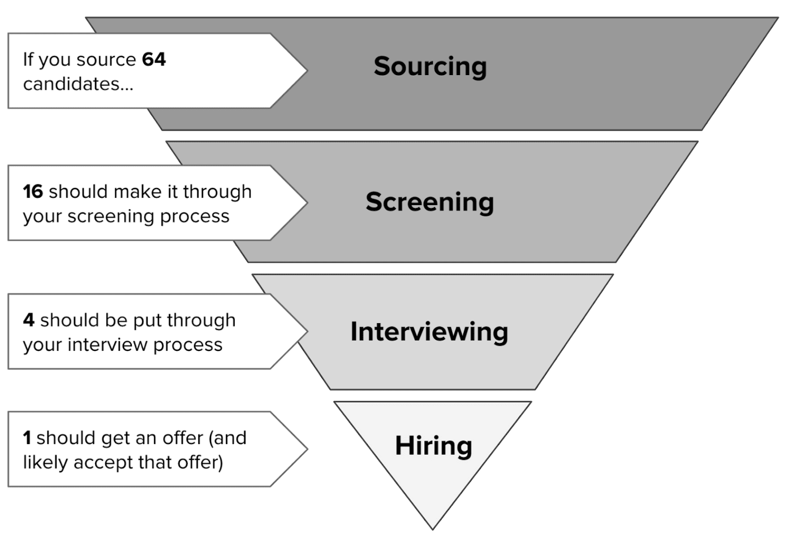
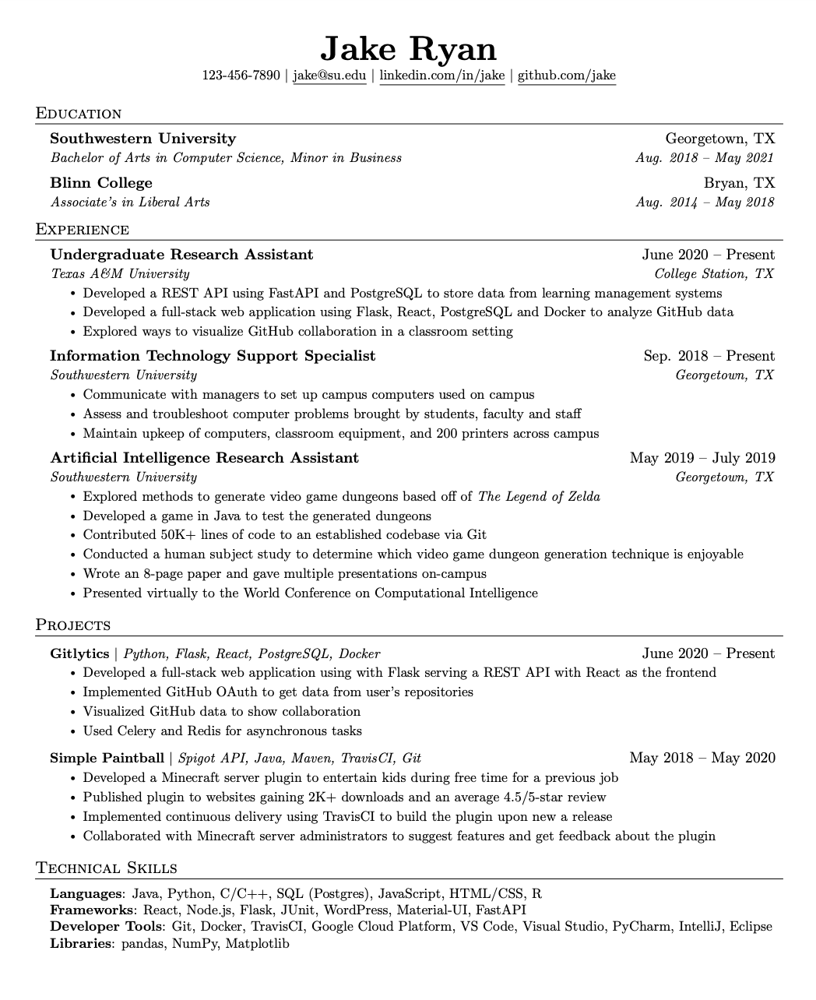

July 3, 2024
There is a lot of misinformation circulating on the most optimal ways to approach job searching as a current student or new grad. I wanted to create a post that helps you avoid applying and interviewing for jobs suboptimally, and let you focus your time on things that will actually improve your chances of landing a role in this market.
This was peer reviewed by other engineers in FAANG+ and quant SWE roles.
I come from a low income background with no close relatives in software engineering. I attended the University of Guelph, which ranks some where between 400-500 globally. I dropped and failed several courses in my first 2 years and missed my first co-op term. Despite all that, I was able to complete a total of 5 internships, and now hold 3 new grad offers from Meta, Snowflake, and Amazon.
Software engineering luckily has one of the most flexible recruitment processes that doesn't rely as much on typical corporate factors like academic prowess, nepotism, and effective networking. Instead, companies place higher focus on experience and your performance in an interview. That doesn't mean that your school name and grades have no impact, or that you should make no effort to connect with your peers, far from it actually. But don't discount yourself as a candidate because of these things. With dedicated time and commitment in the right areas, it is very feasible to find a suitable entry level position for you, even in one of the most difficult markets this field has seen.
One of the first videos I watched on my journey to escape unemployment explained to me the concept of the hiring funnel. This is a concept used by recruiters to model the interview process and how it should refines applicants down to the best suited individuals.
As we progress down the hiring funnel, candidates are routinely eliminated until companies find the people they're satisfied with. In this example, we have a ratio of 64 candidates to one hire. Companies will have drastically different ratios for hiring, in larger tech firms you can expect them to surpass 250:1.
While this process sounds brutal, the good thing is you don't need to pass every interview process you get! You just need to pass one and you're set.
Job hunting is a numbers game at its core. With the hiring funnel, you can identify where you are going wrong, and improve it so you can continue moving forward until you have reached the bottom.
Each stage of the hiring funnel generally has an associated item/task that is assessed to determine whether or not you should continue forward. If you're not moving forward from that stage, then you have identified your weakness.
Let's take a closer look at these areas.
The first step is sourcing, and it's pretty simple; companies require your information to at least begin the process of determining if you're a viable candidate. This is usually done through a job application, or a recruiter reachout if you're really special.
People underestimate this part because it's the very first step and it's relatively easy to fill in a job application. Remember what I said before:
Job hunting is a numbers game at its core.
During my second successful internship search where I ended up at AWS, I applied to about 300 positions. I would say this is a decent goal for the number of applications you should put out for a term if you are actively trying to find an internship. This may sound like a lot (or a little if you're jaded), but you shouldn't be spending more than 5 minutes usually on a job application. Don't write cover letters when they're not required, especially AI generated ones. Those just come off tacky sounding, and no one really reads them anyways.
Entry level software engineering roles are extremely competitive, and applying for jobs is the part that literally anyone can do. Companies do not get the chance to review every application they see, so even if you are the perfect match, you still may not move forward! I seriously urge you to put the work in here, and to not stop until you have received an offer you are satisfied with. Even while actively interviewing, you should still set aside some time to apply to new postings in case things don't go well.
The easiest way to find job applications is through online boards. I would check these everyday for about 5-10 minutes and see if there's anything new that I was interested in. This is a great way to stay up to date on new postings, and allows you to apply earlier than most candidates. I primarily used community powered GitHub repos for this:
Some other common sites I used were LinkedIn and Indeed. You could probably find more, but these were the ones I had the most success with.
If you have friends or family at companies with open positions, definitely check if you can get a referral. I would not recommend going around and cold contacting people you have never met for referrals. It almost never works, and your time could just be spent applying to more positions. If you're interested in networking, attending public company events or club events at your school can be a good way to do so. From a purely career oriented standpoint your results may vary, but these events can be fun!
In terms of choosing jobs to apply for, that is up to you. If you'd like to cast a wide net, I would recommend applying to literally every single position that has "software engineer" in it at your experience level (don't apply for senior roles as a new grad, only apply to intern roles as a student). It does not matter if you do not meet every qualification listed on the posting. The worst thing they can do is say no. If you're trying to be more picky and apply within a certain field (firmware, ML/AI, distributed systems, etc.), then you should have a well tailored resume with strong experiences and projects that represent those interests to compensate for the reduced amount of opportunities.
By the time you have applied to 100 jobs, you should have received at least 1 invitation to begin an interview process. If this isn't the case, it could be that your application is too weak (or you're getting unlucky). The question now is: what can we do to make our application stronger?
A large portion of job applications will ask you to attach a resume. This is the main item they review to determine if you make it past the screening stage and into a formal interview loop.
It can take a long time to write a good resume. Good resumes don't just capture the languages and technologies you're experienced with, or the companies you worked at. They properly highlight the impact you can have, and the things you learned that will set you apart from the thousands of other engineers you're competing with for any given position.
So what goes into making a really good resume?
I strongly recommend using a LaTeX resume template. This does two things for you:
There are many templates that are industry tested and have seen great lengths of success. A very popular one is Jake's Resume which my own resume is a variant of.
If this doesn't tickle your fancy or you want to go with something more unique, you can find a bunch of different layouts on the Overleaf platform or else where. Try searching around and find one you like! If you're a LaTeX god or just really ambitious, you can try making your own. One recommendation I have is to stick with one column resumes, as they are visually easier to scan through.
There are a lot of ways you can go about organizing the sections of your resume, and there's not too many ways you can go wrong. We want to structure our resume from top to bottom in order of most importance to least importance. I'm going to share the ordering I do, but I implore you to think critically and make the right decision for yourself given the contents of your resume.
Education: When applying for internships or new grad positions, having your education at the top is non negotiable if you are attending a university or college. Through my conversations with several recruiters ranging from local shops, unicorns, and big tech, every one of them wants to see these three things immediately:
These details are often necessary towards determining if you are eligible for said position, so making it easy to access is crucial. Once you have moved past entry level roles, education can be moved to the bottom as it is significantly less relevant.
Skills: All resumes should have a skills section, but the placement of it can be controversial. I like to keep it under my education to act like a summary of what high level skills I possess before diving deeper into them with my experience and projects. Others like to keep it at the bottom where it reads more like key takeaways from all of the prior info on you. There's no real right answer here, and the exact placement of this will likely not affect anything.
I have two categories for my skills: languages and technologies. Technologies is pretty broad, I throw any important libraries like React, Ruby on Rails, and any other useful tools and software (AWS/Azure/GCP, Docker, etc). Don't include code editors or operating systems, those don't matter.
Experience: If you have worked in any technical roles (software engineer, data science, devops, etc.), your experience section should come next. Relevant work experiences shows that you have done something in this industry, and that you carry various transferrable hard and soft skills to a new workplace. If you absolutely need to fill space on your resume, I would say put a single non technical role in here with a strong emphasis on your responsibilities and soft skills (teamwork, time management, etc). However, I will talk a bit more later about why you might want to explore other avenues of filling up your resume with content.
Projects: Projects are the best way to show where your personal interests lie in software development as it is your free time and your choice on what to build. I recommend keeping and maintaining your projects somewhere public like GitHub, and avoiding "tutorial hell" style projects like to-do lists and generic clones of apps. Really, you will learn so much more and separate yourself from a large crowd of applicants by making more unique projects that challenge you.
If you have irrelevant experience listed, your projects section should be put above your experience as it is more relevant information.
Extracurriculars: This is technically an extra section, but if you have any extracurriculars (even outside of tech), I think they showcase interpersonal skills much better than any irrelevant work experience. It also displays a level of academic drive and commitment. I strongly recommend getting involved in computing clubs/hackathons at your school as it's a great way to meet new people, and build cool things in team environments which is a great look on a job application.
Anything Else: This can include sections like awards, scholarships, or anything else you deem could have some merit. If you have very strong achievements in areas that aren't related to tech, this could be a good area to put them. Small things can add a little personal flair to what is a largely technical focused document (as it should be).
One thing I distinctly remember thinking when building my very first resume was that I did not have enough content to make it look full. I'm sure this sentiment is shared amongst many people who are applying for internships or jobs their first time around. If you find that's because you are just not aptly covering all of the work and projects you've made, then all you need to do is add that to your resume! If you have fully exhausted all of your software engineering experience and you still cannot fill a pages worth of information on your resume, then you are in the same position as I was.
Your resume can only be as good as your experiences are. Software engineering roles are hyper competitive, and simply putting your technical degree and some random non-related work and extracurriculars will not be enough to give you a reasonable chance at finding a job. I know this because I tried and failed. Another question to ask yourself is that if you're not willing to put in some effort to learn and build with software engineerng tools, why should companies take a chance on you and believe you can build industry level software?
Strong projects can easily fill in those gaps of empty space you have in your resume. I highly recommend setting aside a week just to build out something cool with technologies that you're interested in until you have a semi-working product that roughly accomplishes whatever you initially sought out to do. Personal projects are a great way to separate yourself from a large chunk of applicants who are trying to find a job with little to no experience outside of their degrees. Extracurriculars, hackathons, and software engineering clubs/organizations are other great ways of filling up these spaces with relevant information.
One of the more tedious parts of making a good resume is writing strong bullet points. There's a lot that can be said on this topic, but it might be easier to digest with the videos I used to learn more:
These two talk about the overall process of building a resume, and critically analyze what to highlight in your technical work. Listing the technologies you worked with, providing business context, and highlighting the impact of your changes all lead to an easier to digest sentence that clearly describes your technical strengths.
I find that these concepts become increasingly obvious with a walkthrough of an example, so I refactored one of my bulletpoints to something that looks unfortunately more common:
Used TypeScript to build a service that processes Excel files with customer data into user accounts.
There is a good chance that half of you reading now have a point in your resume written in a similar fashion. This description is far too shallow to gauge if your work was actually of any use.
So what can we do to make things better? A lot of people recommend the STAR format when writing resume points. I recommend giving it read, but I like to keep my content even more concise. I tend to follow something like this:
When you describe what you are building, provide business context on the task and list the technologies you used. In this case, we were building an internal data import service in TypeScript that parses Excel documents.
While talking about your solution, try to subtly highlight why this change makes your workflow stronger and more efficient. This is already being captured in our point as we highlight that we're automating the creation of accounts versus manual entry.
Displaying your results is often easiest with quantitative values. What percentage faster did things get? Are you saving space, reducing load times, increasing customer engagement, or anything else that you can measure? The service I built made creating user accounts 85% faster which we measured during UX research sessions. You can use qualitiative descriptions if you don't have numbers or they wouldn't accurately reflect your intentions.
With all of this info, let me introduce the new and improved sentence:
Lead production of an internal data import service, using TypeScript to parse Excel documents with customer information and convert them into user profiles, reducing account creation times by 85%.
This point alone probably took me half an hour or longer to iron out and include everything I wanted to. It can be difficult to recall everything that you did in an internship, and accurately summarize and emphasize your strengths in one neat little sentence. Give yourself some time, and get it reviewed by other people with fresh pairs of eyes. This can be a huge rabbit hole (at least for me), so I would recommend blocking off a day or so to squeeze out as much as you can before getting it looked at by a friend.
Congratulations! You now have a passable resume that will hopefully net you some interviews after a few hundred applications. Now comes the nervewracking part, talking to another person about software engineering.
The good thing is your interviewers do not want you to fail miserably. That would just lead to an awkward situation for both parties. It is an interviewer's job to gauge your ability as an engineer and how you would fit in their team and company. It's ok to be nervous, but be confident in your abilities and put your best foot forward.
Before entering an interview, you should try to get as much information as you can. If you're interviewing with a larger company, you may be able to find information on their processes on the internet. You can also try reaching out to friends and other people in your network that are at the company if you know anyone. However, your most reliable source of information will likely come from the person organizing your interview (typically a recruiter or hiring manager). I highly encourage you ask about the format of an interview and what the interview will cover. This will allow you to prepare more accurately.
Interview questions are broken up into a few categories. The most common are behavioural and technical, and you may run into a system design portion at certain places (Netflix, Palantir, Uber, etc). Let's talk more about how to prep for these areas.
If you have ever done an interview for any job ever, it is very likely you have answered behavioural interview questions. These are your generic "tell me about a time..." questions that analyze your ability to effectively communicate, and use various soft skills in the workplace. There are several resources online to prep, but I like this one from LinkedIn cause they cover a wide breadth of areas.
People typically use the STAR format to answer these questions (Amazon even recommends it). I have never strongly adhered to it, but if you find yourself lacking structure without some framework, do whatever it takes! One common mistake is rushing to answer a question right after it's been asked without fully knowing how you're even going to answer. It is totally fine to take a few moments to think and build an appropriate response, just let your interviewer know that you're getting everything in order. In these cases, I wouldn't take longer than around 15 seconds.
One last tip is to keep things casual. No one wants an extremely formal and uptight environment during your conversation, including your interviewers. They want to see what it's like to work with you on a day to day basis, so coming off as a robot will probably not help your case. Treat it like a regular conversation and things will flow much better and feel more natural for both parties.
People greatly underestimate behavioural interviews, but they are very important in the grand scheme of your interview process. At the end of the day, these people will be working with you. That doesn't just involve your technical abilities. They also want to see you be an effective communicator about technical/work topics in a confident manner without coming across as an asshole.
Before entering a technical interview, I want to highlight again how important it is to gather as much information as possible on the contents of the interview. Many larger companies will provide descriptions of what they ask, and for smaller shops just messaging the manager/recruiting staff or any employees you know will give you a leg up. A technical interview can cover many different things, and not being able to eliminate any of them means you have to prep for an extremely large list of potential topics.
I also want to emphasize that technical interviews can be difficult. I have failed many throughout my time as a student, even on topics that I was well rehearsed on! What I'm trying to say is that it's normal to fail interviews. In my case, I have failed about as many interview loops as I have passed, and I know many people who have failed 3-4x more interviews than they have passed. Again, all you need to do is just pass one interview loop.
Technical interviews typically fall into two different boxes. One is centered around technical knowledge and trivia, and the other is data structure and algorithms questions.
These interviews are almost always position and company specific. There is no generic way of approaching this, and if you believe the company will ask these style of questions, a great point of reference is the initial job posting. These will often have a list of technologies and frameworks they want the candidate to have prior knowledge of. If the position is centered around frontend or UI, consider focusing ur time on important concepts in HTML/CSS, JavaScript, the DOM, and anything else. If it's backend, maybe look into DNS, REST APIs, basic database stuff (SQL), and any specific language trivia that could be asked. If these are smaller shops, typically a surface level understanding of these technologies along with some implementation details will suffice, but every interview can and will be different.
These trivia style questions can be asked at literally any kind of company, from small shops all the way to quant firms. Again, the best way to target your prep effectively is by gathering information before hand on what things may be asked. You may not get asked any specific knowledge or trivia question at all at many places.
It's becoming more popular (especially at larger companies) to test algorithms and data structures knowledge as the main component of a technical interview. If you have no idea what data structures and algorithms are, I advise you to go through a bit of this Youtube playlist which will give you a baseline understanding of the most common ones.
However, knowing these concepts and actually applying them are 2 extremely different things. Knowing when and how to apply the correct data structure/algorithm to a problem is something that requires a great amount of practice, and intuition to be able to do quickly in an interview setting. Thankfully, there are a variety of resources that you can use that help promote incremental progress.
The main platform I use is LeetCode, which is an online platform with a variety of data structures and algorithms questions that mimic the style and structure of coding interviews. There are over 2000 problems on the site, each focusing on different areas with varying levels of difficulty (easy/medium/hard). LeetCode also has "tagged" questions, which is a community driven effort to label questions as being used in a certain company's technical interviews.
Since the catalogue of problems is so massive, it would be pretty difficult to fly blindly and try solving questions at random and expect improvement. Thankfully, smarter people have built lists that collect problems and patterns that are commonly asked in interviews! Here are the two most common:
Since Neetcode150 is a superset, I generally recommend that if you have more time as it's more comprehensive. However, if you find yourself really crammed, then Blind75 is the original list that people used for years prior to Neetcode150. One website that helps structure your learning is Grind75, which orders the question by difficulty and estimated time, and gives you a schedule depending on how many weeks and hours per week you would like to spend.
If I had to rank the various categories of questions on a scale of importance, here is what I would focus on:
CRITICAL (every tech interview)You might find some companies fall in between these sections, and certain places have favourite categories.
If you find yourself needing a bit more structure or are looking for supplementary material, these are the only alternatives I found useful and have used before.
First is a very classic book called "Cracking the Coding Interview" by Gayle Laakmann McDowell. The author previously worked at Google, Apple, and Microsoft. She used her experience as both an interviewee and an interviewer to build a comprehensive guide on how to approach technical and behavioural questions and systematically solve them. I read a good chunk of this while preparing for my Amazon review, and found it very useful as a complete noob to data structures and algorithm style interviews.
The second is a course called "Grokking the Coding Interview". This places all of its focus on identifying and refining the fundemental patterns behind coding questions you would see on a technical interview. If you find yourself struggling to solve new problems in a category even after solving many similar questions beforehand, this course may help reinforce those concepts. I used this for more difficult concepts like dynamic programming and backtracking which I had great difficulty understanding and translating to new problems.
Disclaimer: I have never actually done a system design interview. This section was written with the help of others who have.
System design is not a common topic in many entry level interviews, but certain companies do ask it like Uber, Palantir, HubSpot and a few other big tech and quant places. You should only prepare for these styles of interviews if you're deeply interested in the actual content, or you are certain you have an upcoming interview that requires this knowledge.
System design interviews are extremely broad, and often start with a very open question like "Design Uber" and evolve from there. These interviews are way more practical, and apply real world strategies to designing software that you will encounter on a day-to-day basis as a software engineer. There is also no 100% correct answer usually, so communicating your thought process and justifying your decisions with concrete knowledge becomes way more important.
Like the other areas, there are a variety of resources you can use to learn system design. I am going to list some of the most recommended ones to me from more experienced engineers:
Perhaps in the future when I get some more hands-on experience with system design interviews, I'll create a separate post for it.
You made it to the end! This handbook should help you prepare for 95% of your potential software engineering interviews at the entry level (there's always outliers).
Here are some final parting words:
Job searching is a really difficult thing to figure out on your own. I stand on the shoulder of giants; none of this advice is really original or novel. It's all bits and pieces I picked up over the years through mentors, friends, and the internet. Don't waste time grinding your gears over stuff other people have figured out better ways to do.
Interview seasons can last several weeks - months which can take a serious toll on you depending on your weekly time investment. Starting early on interview prep can help balance your workload way more than cramming 80 hours of work into a week. I speak from experience.
Happy job hunting!
— prad